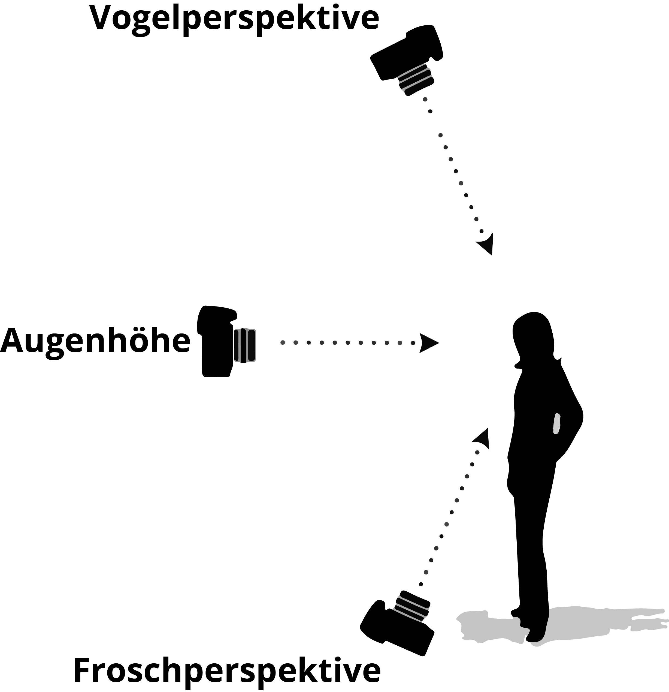

Produktion
Ein guter Film...
Was macht einen guten Film aus?
Ein guter Film...
- veranschaulicht ein besonderes Thema.
- sollte die Wünsche des Kunden umsetzten.
- enthält wenige Worte, dafür wiederholt.
- ist verständlich.
- sollte auf das Wesentliche reduziert sein.
- ist nicht übertrieben oder hochnäsig.
- ist lustig, hat Humor und beinhaltet Wortspiele.
- zeigt einen ernstzunehmenden Spannungsbogen auf.
- sollte Neugierde wecken.
- sollte kurzweilig sein und im Gedächtnis bleiben.
- sagt sofort aus, um was es geht.
- weist ein Zeitgerüst auf.
- ist ein Wechsel zwischen Raum und Zeit.
- ist ein Spiel mit dem Rhythmus.
- zeigt unterschiedliche Perspektiven und Bewegungen.
- visualisiert verschiedene Geschwindigkeiten.
- veranschaulicht Inhalte durch Testimonials oder Success Stories.
- spricht die Emotionen an.
- gelingt, wenn die Zuschauer sich mit den Figuren identifizieren können und mit ihr mitfiebern.
- ruft Gefühle durch Details hervor.
- lässt Raum für Interpretation.
- nutzt Detailaufnahmen.
- Nutzt Musik passend zu den Gefühlen und der Stimmung.
- erzeugt Spannung, die durch den Sound gesteuert wird.
- beinhaltet Bilder passend zu den Gesprächssequenzen.
- bringt die Kernaussage zum Schluss.
YouTube Channel mit zahlreichen Hintergrundinfos zur Gestaltung im Film
Kameraeinstellungen
Die Blende (/f)
Die Blende kontrolliert, wie weit das Objektiv einer Kamera geöffnet ist. Das heisst je weiter geöffnet,
desto mehr Licht fällt auf den Sensor der Kamera.
Je kleiner die Blendenzahl, desto grösser die Blendenöffnung, desto mehr Licht fällt ein.
Die Kamera hat einen Modus A (oder Av), in welchem die Blendenzahl selbst eingestellt werden kann.
Dementsprechend wird zu der verwendeten Blendenzahl die passende Verschlusszeit automatisch eingestellt.
Mit der Einstellung der Blendenzahl wird nicht nur bestimmt, wie viel Licht auf den Sensor fällt,
sondern auch, wie viel Tiefenschärfe das Bild hat.
Je kleiner die Blendenzahl, umso weniger Tiefenschärfe hat das Bild.
Die Belichtungszeit
Wie lange der Verschluss der Kamera, beim Schiessen eines Fotos, geöffnet bleibt, ist abhängig von der
Belichtungszeit, auch Verschlusszeit genannt. Die Verschlussvorhänge sind grundsätzlich nur
Bruchteile einer Sekunde offen.
Beispielsweise fällt bei einer Verschlusszeit von 1000, nur für
1/1000 Sekunde Licht auf den Sensor der Kamera.
Eine kurze Verschlusszeit friert das Motiv ein, eine lange verschafft dem Motiv Bewegungsunschärfe.
Die Verschusszeitpriorität kann im Modus S (Tv) selbst bestimmt werden. Die Blende wird dazu von
der Kamera automatisch passend gewählt.
Die Verschlusszeit wird kleiner (weniger Licht), die Blende öffnet sich und die
Blendenzahl wird kleiner (mehr Licht wird durchgelassen).
Die Verschlusszeit wird größer (mehr Licht), dabei schließt sich die Blende und
die Blendenzahl wird größer (weniger Licht kommt durch).
Brennweite
Die Brennweite ist abhängig vom Objektiv und durch sie kann ein Bildausschnitt von Ihrem
aktuellen Aufnahmestandort aus verändert werden.
Brennweite-Kategorien:
| Bezeichnung | Brennweitenbereich |
|---|---|
| Super-Weitwinkel-Objektive | 11 bis 24mm |
| Weitwinkel-Objektive | 25 bis 35mm |
| Normal-Objektive | 40 bis 50mm |
| Portrait-Objektive | 85 bis 130mm |
| Tele-Objektive | 140 bis 250mm |
| Super-Tele-Objektive | 260 bis 600mm und mehr |
Je grösser die Brennweite eines Objektivs ist, desto weiter entfernt kann man von einem
Objekt stehen, um es formatfüllend auf den Sensor zu bannen.
Je kleiner die Brennweite ist, desto näher kann man an ein Objektiv herangehen.
Die Belichtung
Wechselt man in den Modi Auto, P, A und wählt die Kamera die Belichtung selbst, was vor allem
bei schwierigen Lichtsituationen nicht empfehlenswert ist.
Anderenfalls zeigt der Belichtungsmesser der Kamera an, ob das Bild gut, über- oder unterbelichtet ist.
Der ISO
Der ISO-Wert beschreibt die Lichtempfindlichkeit des Kamerasensors.
Bei einer kleinen ISO-Zahl nimmt der Sensor wenig Licht auf, bei einer grossen nimmt
er viel auf.
Kann der Sensor der Kamera mehr Licht aufnehmen, ist er lichtempfindlicher und man kann
mit der Verschlusszeit variieren.
Je höher der ISO-Wert, desto stärker wird das Bildrauschen.
Wollen Sie noch mehr darüber erfahren?
Laden Sie sich einen Flash-Player herunter oder klicken Sie auf das Informieren-Symbol, um Flash zuzulassen. Nun können Sie das Videotraining zur Filmtechnik durchführen:
SF Wissen Videoguide
Filmen
Einstellungsgrössen
Grundsätzlich gibt es fünf unterschiedliche Einstellungsgrössen.
Bei einer Detailaufnahme wird ausschliesslich der Augenbereich aufgenommen,
bei einer Grossaufnahme das vollständige Gesicht
und bei einer Nahaufnahme das Gesicht bis zu den Schultern.
Vergrössert man den Abstand zum Objekt und nimmt den Oberkörper bis zu Hüfte auf, wird das Halbtotale genannt.
Die Totale zeigt eine Person von Kopf bis Fuss.
Zu empfehlen wäre, dass Rund 50% der Aufnahmen für ein Video Nahaufnahmen sein sollten.
Perspektive
Die Froschperspektive erfolgt von unten hinauf und wirkt bewundernd,
autoritär, jedoch auch relativ unvorteilhaft.
Die Vogelperspektive filmt von oben herab und der Betrachter hat das Gefühl die
Situation unter Kontrolle und den Überblick zu haben. Trotzdem kann diese Perspektive einschüchternd
und "von oben herab" wirken.
Will man keinen ausgefallenen Effekt durch eine spezielle Sichtweise erzielen, filmt man
grundsätzlich auf Augenhöhe.

5-Shot-Coverage
Die Five Shot Regel besagt, dass von einer Szene immer mindestens fünf unterschiedliche
Einstellungen jeweils 10 Sekunden lang aufgenommen werden sollten, damit strukturiert alle Bilder eingefangen werden und
genug Material beim Schnitt vorliegt.
Hier kann es helfen, mental die W-Fragen durchzugehen also zum Beispiel:
- Wo befinden wir uns?
- Die komplette Backstube filmen, in der der Bäcker steht und Teig knetet (Halbtotale/Totale).
- Wer knetet den Teig?
- Nah-oder Grossaufnahme des Bäckers.
- Was genau tut der Bäcker?
- Detailaufnahme vom Kneten.
- Wann tut er das?
- Bäcker beim Kneten seitlich von der Hüfte aufwärts mit dem Fenster im Hintergrund (Halbtotale).
- Wie/Warum tut er das?
- Freie Einstellung: Zum Beispiel ein Blick über die Schulter des Bäckers auf das Kneten.
Spiel mit der Zeit
Das Filmen von Szenen kann in verschiedensten Zeitabschnitten erfolgen.
Es ist beispielsweise eine Möglichkeit die Kamera an einem fixen Standort
über Tage oder Wochen hinweg aufnehmen zu lassen.
Zu lange Aufnahmen können
im Nachhinein auf die aussagekräftigsten Bilder reduziert werden.
Hierzu gibt
es die Möglichkeit einen Zeitraffer einzusetzen und die Bilder so schneller
abspielen zu lassen.
Eine weitere Option wäre mit Jumpcuts
zu arbeiten, also zwischenzeitlich Bilder auszulassen, um beispielsweise
der Gang einer Person nicht in voller Länge ansehen zu müssen.
Andererseits können Aufnahmen auch im Nachhinein in Slow Motion, das bedeutet verlangsamt, abgespielt werden.
Kamerabewegung
Im Allgemeinen sollten Kamerabewegungen immer einer einzigen Bewegungskontinuität folgen.
Schwenkt man hauptsächlich von links nach rechts, sollte diese Kamerabewegung sich kontinuierlich
durch die gesamten Aufnahmen ziehen.
Es gibt unterschiedliche Arten die Kamera während einer Aufnahme zu bewegen:
- Fixierte Kamera:
Bewegung durch einen Schwenk
Diese Methode findet vor allem Anwendung im Skisport und es wird bestenfalls ein Stativ benötigt. Der passive Schenk begleitet eine Bewegung im Motiv mit und der aktive Schenk bewegt sich beispielsweise über eine Landschaft hinweg.- Mobile Kamera:
Bewegung durch das Travelling -
Beim Travelling folgt die Kamera dem Protagonisten und zeigt so, was dieser sieht. Diese Methode kann Spannung aufbauen. - Scheinbar bewegende Kamera:
Bewegung durch einen Zoom
Zeigt der Protagonist zum Beispiel mit dem Finger auf ein Objekt, kann dieses mit dem Zoom in der nächsten Szene näher betrachtet werden. Mit dieser Vergrösserung lässt sich der Blick des Zuschauers auf etwas lenken.
Der Ton
Ein Ton kann Emotionen auslösen oder verstärken, informieren oder als
Gestaltungselement, in Form von passender Musik, eingesetzt werden.
Man unterscheidet hier den O-Ton, also den Originalton
eines Gesprächs oder ähnlichem, vom Umgebungston, kurz Ambi genannt.
Des Weiteren können Effekte unterstützend wirken.
Störgeräusche wie Straßenverkehrslärm oder ein klingelndes Smartphone können Aufnahmen
unbrauchbar machen. Um die Tonaufnahme vor nicht gewollten Geräuschen zu bewahren, hilft es
oftmals schon die Position zu wechseln oder die Blickrichtung
zu verändern.
Ist ein Störgeräusch nichtsdestotrotz hörbar, sollte die Lärmquelle miteingebunden werden.
Bereitet hingegen der Wind Probleme, kann ein Mikrofon-Windschutz Abhilfe
leisten.
Zu empfehlen ist es, die Tonaufnahmen mit Kopfhörern vor Ort anzuhören, damit bei
Bedarf nochmals neu aufgenommen werden kann.
Die Tonaufnahmen sollten, wenn möglich, mit externen und nicht mit internen Mikrofonen
aufgenommen werden.
Ein gern verwendetes Hilfswerkzeug stellt die Tonangel dar. Das Mikrofon
wird an der Spitze des verlängerbaren Stabes befestigt, damit es sich näher am Schauspieler
befindet und eine bessere Audioqualität zustande kommt.
Es gibt verschiedenste Richtcharakteristiken bei Mikrofonen:
Die Kugelcharakteristik nimmt den Schall von allen Seiten gleich laut auf und behält den räumlichen Klang.
Die Nierencharakteristik empfängt den frontal eintreffenden Schall und unterdrückt
Schall aus dem Rückraum. Hiermit eignet es sich gut, um Gespräche aufzunehmen.
Das meist für Interviews verwendete Richtmikrofon nutzt ebenfalls die Technik der Nierenform.
Die heutzutage nur noch selten verwendete Achtercharakteristik
„hört“ nach vorne und nach hinten, ist aber für Schall von den Seiten sehr unempfindlich.
Zuletzt erwähnen werde ich die Abwandlungen der herkömmlichen Nierencharakteristik, die
Super- und Hypernieren. Diese sind besonders stark auf frontseitigen Schall fokussiert.
Bei der Verwendung von Musik im Video muss darauf geachtet werden, dass diese unter
der Creative Commons-Lizenz steht. Ausserdem sollte explizit durchgelesen werden,
für welche Zwecke die Lizenz
gilt und ab welchem Punk der Urheber sein Recht einklagen könnte.
Creative Commons
Finden Sie hier passende Musik:
Lichtsituation
Erfolgt eine Belichtung durch Filmlicht, also beispielsweise durch eine Softbox,
wirkt dies aus einem seitlich oberen Winkel am natürlichsten.
Auf der gegenüberliegenden Seite kann ein Reflektor dunkle Schatten in Gesichtern verhindern.
Wird statt der silbernen Reflektorseite die goldene verwendet, wirkt das Bild wärmer.
Besteht eine direkte Sonneneinstrahlung beim Dreh, kann die schwarze Seite darunterliegendes
abdunkeln und die Milchfolie ein weicheres Licht einwerfen.
Bei Personen sollte sich eine kleine Lichtspiegelung in den Augen erkennen lassen,
da sie so lebendiger wirken.
Ist das Licht ungenügend, kann hierbei eine Stirnlampe aushelfen.
Die Belichtungsautomatik regelt den Weissabgleich weitgehend selbst. Dabei geht die
Kamera davon aus, dass der hellste Punkt im Bild weiss ist. Ist dies wiederum nicht der Fall,
wird dadurch die Stimmung verändert und es muss ein manueller Weissabgleich mit den Lumetri-Farbeffekten durchgeführt werden.
Für mehr Informationen besuchen Sie diese Webseite:
Tutorials zum richtigen Umgang mit Licht und zahlreiche Beispiele für gute Lichtsettings
Probieren Sie verschiedene Lichtsituationen selbst aus!
Wie entstehen unbrauchbare Bilder?
Grundsätzlich kann die Aufnahme von unbrauchbaren Bildern verhindert werden, indem man...
- bei unruhiger Hand ein Stativ oder eine andere Möglichkeit zur Stabilisierung der Kamera sucht.
- nicht bei einem zu grossen Hell-Dunkel-Kontrast aufnimmt.
- nicht gegen das Licht filmt.
- keine Aufnahmen von Personen mit direkt von oben einstrahlender Mittagssonne aufnimmt.
Probleme mit dem Autofokus können auftauchen, wenn...
- ein zu dominanter Hintergrund scharf gestellt wird.
- keine ausreichende Beleuchtung vorhanden ist.
- sich der Vordergrund bewegt.
- im Vergleich zum Hintergrund ein kleines Objekt scharf gestellt werden soll.
Derartige Probleme werden verhindert, ...
- durch Betätigung des AUTO-Knopfes und anschliessende manuelle Eingabe des Schärfebereichs.
- durch die Eingabe einer Distanzangabe, in welcher sich das scharfzustellende Objekt befindet.
Für die Aufnahme mit einem Smartphone, sollten Sie diese Anleitung durchlesen.
Anleitung für bessere Smartphone Videos
Nach dem Dreh ist vor dem Dreh
- Akkus der Kamera aufladen!
- Daten importieren und redundant speichern.
- Beim nächsten Gebrauch kann getrost formatiert werden!
Hält man sich an diese Abläufe ist man sofort einsatzbereit beim nächsten Dreh.
Filmschnitt
Workflow Post Production
- Video- und Audiodaten von der Speicherkarte kopieren und backupen.
- Ordnerstruktur aufbauen (01 INPUT, 02...)
- Sichern und benennen (nach Szene/Datum/Kamera/...)
- Premiere Pro: Projekt & Import (Sequenz einstellen, Film/Ton synchronisieren)
- Rohschnitt
- Feinschnitt
- Color Grading & Animation
Laufend versionieren und backupen!!!
Tiefergehende Ausführungen zum Filmschnitt finden Sie hier:
Filmschnitt - Begriffe, Tipps und Tricks
9 Cuts Every Video Editor Should Know
Regeln für den Filmschnitt
- Material sichten, ordnen und benennen
- ein einfacher Schnitt reicht aus!
- Gutes Material generieren
- Neue Regeln aufsetzen
- Pause = frischer Blick
- Feedback einholen
Adobe Premiere Pro CC
Eine führende Softwareanwendung für die Videobearbeitung von Film, TV und Web stellt Adobe Premiere dar.
Mit Premiere Pro können alle gängigen Videobearbeitungsaufgaben durchgeführt werden.
Sie können Videomaterial, Audio und Grafiken in das Schnittprogramm importieren, Farben und Ton korrigieren und
Text und Titel einsetzen. Des Weiteren können Filter zusammen mit anderen Effekten angewendet und das Video anschliessend
in das für die Verteilung erforderliche Medium und Format exportiert werden.
Lernen Sie die Grundlagen oder vertiefen Sie Ihr Know-how mit einigen Online-Tutorials.
Farbkorrekturen mit dem Lumetri Effekt von Premiere Pro
Das Arbeiten mit Green Screen in Premiere
Premiere Projekt für ältere Versionen abspeichern
Premiere Projekt mit After Effects weiterbearbeiten und umgekehrt
Adobe: Essential Graphics
After Effects

Adobe After Effects CC ist eine Standardsoftware zum Erstellen von Grafikanimationen und Spezialeffekten für Videos, Online-Inhalte und Präsentationen. Es kann sozusagen als Ergänzung zur Premiere Pro Software gesehen werden und ist nicht das dasselbe wie eine Videobearbeitungssoftware. Dieses Programm wird am besten zum Anwenden von Animationen Effekten verwendet, nachdem das Material bearbeitet wurde. Als kreatives und technisches Programm kann 2D-Filmmaterial in einem 3D-Raum zusammengestellt, erstellt und stilisiert werden. Es kann Titel entwerfen, 2D-Zeichentrickfiguren erstellen und vieles mehr.
Lernen Sie die Grundlagen oder vertiefen Sie Ihr Know-how mit einigen Online-Tutorials.
Motion Tracking mit After Effects
Unterschiede zwischen den Keyframe und Kurventypen After Effects Motion Tracking
Datenhandling bei Videos
Finden Sie hier mehr über Video-Codecs, Container und Komprimierung heraus.